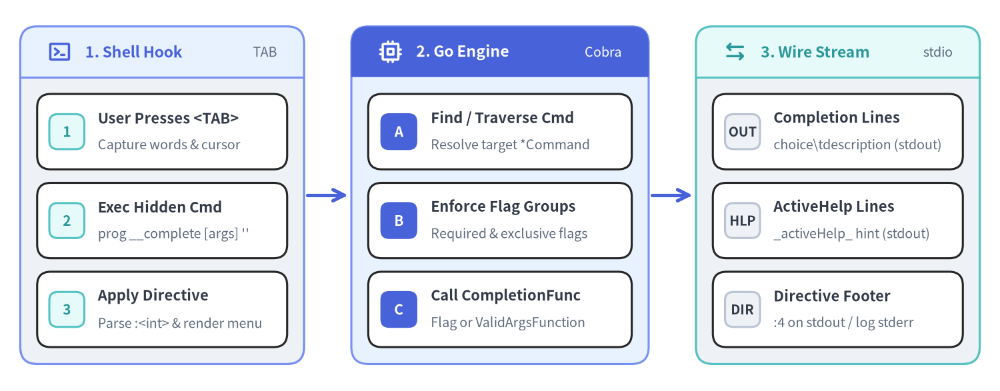
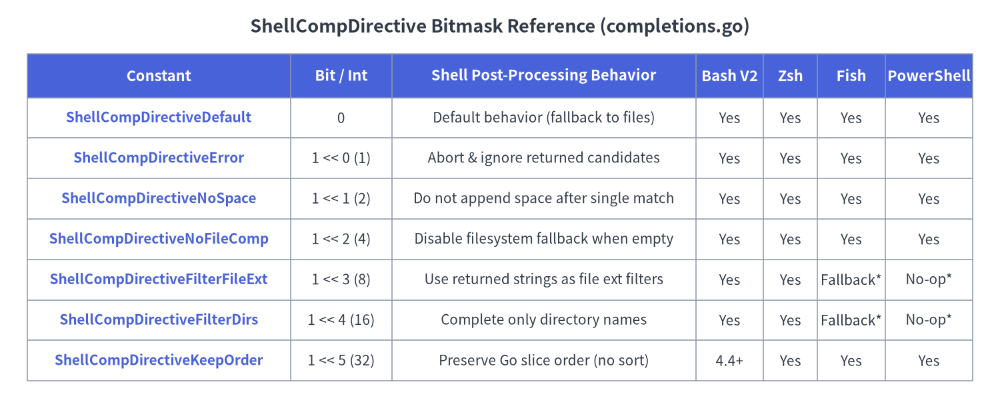

05. Dynamic Completions, Directives & ActiveHelp
The dynamic completion engine in github.com/spf13/cobra (completions.go and active_help.go) enables CLI applications to compute context-aware tab completions and inline usage hints (ActiveHelp) purely in Go. Instead of embedding static flag and subcommand tables inside shell scripts, Shell Completion V2 delegates completion evaluation at runtime to two hidden internal commands (__complete and __completeNoDesc) and controls post-completion shell behavior through the ShellCompDirective bitmask.

Source Code
from drawlib.canvas import save, setup
from drawlib.icons import phosphor
from drawlib.lines import line
from drawlib.smartarts import CardList, Panel
from drawlib.styles import Styles
setup(width=148, height=58, dpi=150)
# 1. Left Panel: Shell Hook
p1 = Panel(
"1. Shell Hook",
"TAB",
style=Styles.Neutral,
header_style=Styles.PrimaryNeutral,
text_style=Styles.PrimaryBold.patch(text_size=11.0),
description_style=Styles.Muted.patch(text_size=9.5),
header_height=7.5,
icon=phosphor.terminal_window,
icon_style=Styles.PrimaryBold,
)
p1.draw(xy=(3, 4), width=42, height=50)
ix1, iw1, ih1 = p1.get_content_box(xy=(3, 4), width=42, height=50, padding=(2.5, 2.5))
cl1 = CardList(
style=Styles.White,
text_style=Styles.DarkBold.patch(text_size=10.5),
description_style=Styles.Muted.patch(text_size=9.5),
badge_shape="rounded_rect",
badge_style=Styles.SecondaryNeutral,
badge_text_style=Styles.SecondaryBold.patch(text_size=10.0),
spacing=2.0,
)
cl1.add("User Presses <TAB>", "Capture words & cursor", badge_text="1")
cl1.add("Exec Hidden Cmd", "prog __complete [args] ''", badge_text="2")
cl1.add("Apply Directive", "Parse :<int> & render menu", badge_text="3")
cl1.draw(xy=ix1, width=iw1, height=ih1)
line((45.5, 29), (51.5, 29), arrow_head="->", style=Styles.PrimaryBold)
# 2. Middle Panel: Go Runtime Engine
p2 = Panel(
"2. Go Engine",
"Cobra",
style=Styles.PrimaryNeutral,
header_style=Styles.PrimaryFlat,
text_style=Styles.WhiteBold.patch(text_size=11.0),
description_style=Styles.White.patch(text_size=9.5),
header_height=7.5,
icon=phosphor.cpu,
icon_style=Styles.WhiteBold,
)
p2.draw(xy=(52, 4), width=44, height=50)
ix2, iw2, ih2 = p2.get_content_box(xy=(52, 4), width=44, height=50, padding=(2.5, 2.5))
cl2 = CardList(
style=Styles.White,
text_style=Styles.DarkBold.patch(text_size=10.5),
description_style=Styles.Muted.patch(text_size=9.5),
badge_shape="rounded_rect",
badge_style=Styles.PrimaryFlat,
badge_text_style=Styles.WhiteBold.patch(text_size=10.0),
spacing=2.0,
)
cl2.add("Find / Traverse Cmd", "Resolve target *Command", badge_text="A")
cl2.add("Enforce Flag Groups", "Required & exclusive flags", badge_text="B")
cl2.add("Call CompletionFunc", "Flag or ValidArgsFunction", badge_text="C")
cl2.draw(xy=ix2, width=iw2, height=ih2)
line((96.5, 29), (102.5, 29), arrow_head="->", style=Styles.PrimaryBold)
# 3. Right Panel: Wire Stream Output
p3 = Panel(
"3. Wire Stream",
"stdio",
style=Styles.Neutral,
header_style=Styles.SecondaryNeutral,
text_style=Styles.SecondaryBold.patch(text_size=11.0),
description_style=Styles.Muted.patch(text_size=9.5),
header_height=7.5,
icon=phosphor.arrows_left_right,
icon_style=Styles.SecondaryBold,
)
p3.draw(xy=(103, 4), width=42, height=50)
ix3, iw3, ih3 = p3.get_content_box(xy=(103, 4), width=42, height=50, padding=(2.5, 2.5))
cl3 = CardList(
style=Styles.White,
text_style=Styles.DarkBold.patch(text_size=10.5),
description_style=Styles.Muted.patch(text_size=9.5),
badge_shape="rounded_rect",
badge_style=Styles.Neutral,
badge_text_style=Styles.DarkBold.patch(text_size=9.5),
spacing=2.0,
)
cl3.add("Completion Lines", "choice\\tdescription (stdout)", badge_text="OUT")
cl3.add("ActiveHelp Lines", "_activeHelp_ hint (stdout)", badge_text="HLP")
cl3.add("Directive Footer", ":4 on stdout / log stderr", badge_text="DIR")
cl3.draw(xy=ix3, width=iw3, height=ih3)
save()
typeCompletion & CompletionFunc#
Defined in completions.go, Completion and CompletionFunc are the foundational type aliases for all static (Command.ValidArgs) and dynamic (Command.ValidArgsFunction and Command.RegisterFlagCompletionFunc) completions in Cobra v1.10.2.
Go Signatures#
// Completion is a string that can be used for completions.
// Two formats are supported:
// - the completion choice
// - the completion choice with a textual description (separated by a TAB).
// Note: Go type alias is used to provide a more descriptive name in the documentation,
// but any string can be used.
type Completion = string
// CompletionFunc is a function that provides completion results.
type CompletionFunc = func(cmd *Command, args []string, toComplete string) ([]Completion, ShellCompDirective)
Parameter & Return Specification#
| Parameter / Return | Type | Description |
|---|---|---|
cmd |
*Command |
The resolved target command for which completion is being requested. Carries the parsed flag state and cmd.Context(). |
args |
[]string |
Positional arguments already typed and completed on the command line (excluding parsed flags when DisableFlagParsing is false, and excluding toComplete). |
toComplete |
string |
The current word prefix under the user's cursor being completed (may be "" if the cursor follows a trailing space). |
[]Completion |
[]string |
Slice of candidate strings ("value" or "value\tdescription"), optionally interspersed with _activeHelp_ entries. |
ShellCompDirective |
int (bitmask) |
Bitmask instructing the calling shell script how to handle post-processing (e.g., ShellCompDirectiveNoFileComp). |
[!NOTE] Because
type Completion = stringandtype CompletionFunc = func(...)are Go type aliases (=), existing code passing[]stringor rawfunc(cmd *cobra.Command, args []string, toComplete string) ([]string, cobra.ShellCompDirective)callbacks remains 100% source- and binary-compatible without type conversions.
funcCompletionWithDesc, NoFileCompletions & FixedCompletions#
Cobra provides three built-in helper functions in completions.go to construct described choices and common CompletionFunc callbacks without boilerplate closures.
Go Signatures#
// CompletionWithDesc returns a Completion with a description by using the TAB delimited format.
func CompletionWithDesc(choice string, description string) Completion
// NoFileCompletions can be used to disable file completion for commands that should
// not trigger file completions. This method satisfies CompletionFunc.
func NoFileCompletions(cmd *Command, args []string, toComplete string) ([]Completion, ShellCompDirective)
// FixedCompletions can be used to create a completion function which always
// returns the same results. This method returns a function that satisfies CompletionFunc.
func FixedCompletions(choices []Completion, directive ShellCompDirective) CompletionFunc
Helper Behavior Matrix#
| Function | Signature / Role | Returned Value | Typical Usage |
|---|---|---|---|
CompletionWithDesc |
(choice, description string) Completion |
choice + "\t" + description |
Building rich candidates inside ValidArgs, FixedCompletions, or custom CompletionFunc implementations. Multi-line descriptions are truncated at the first \n during wire serialization. |
NoFileCompletions |
CompletionFunc |
nil, ShellCompDirectiveNoFileComp |
Assigned directly to cmd.ValidArgsFunction = cobra.NoFileCompletions on commands that take no positional files (such as completion or version). |
FixedCompletions |
(choices []Completion, directive ShellCompDirective) CompletionFunc |
Closure returning (choices, directive) |
Registering static enum choices for flags (cmd.RegisterFlagCompletionFunc("output", cobra.FixedCompletions(...))) or positional arguments. |
Usage Example#
package main
import (
"strings"
"github.com/spf13/cobra"
)
func newDeployCmd() *cobra.Command {
var env string
cmd := &cobra.Command{
Use: "deploy [service]",
Short: "Deploy a target service to an environment",
ValidArgsFunction: func(cmd *cobra.Command, args []string, toComplete string) ([]cobra.Completion, cobra.ShellCompDirective) {
if len(args) > 0 {
return cobra.NoFileCompletions(cmd, args, toComplete)
}
candidates := []cobra.Completion{
cobra.CompletionWithDesc("api-gateway", "Public HTTP/gRPC ingress proxy"),
cobra.CompletionWithDesc("auth-worker", "OAuth2 & OIDC token issuer"),
cobra.CompletionWithDesc("billing-svc", "Stripe & ledger reconciliation"),
}
var filtered []cobra.Completion
for _, c := range candidates {
if strings.HasPrefix(c, toComplete) {
filtered = append(filtered, c)
}
}
return filtered, cobra.ShellCompDirectiveNoFileComp
},
RunE: func(cmd *cobra.Command, args []string) error {
return nil
},
}
cmd.Flags().StringVarP(&env, "env", "e", "staging", "Target deployment environment")
_ = cmd.RegisterFlagCompletionFunc("env", cobra.FixedCompletions([]cobra.Completion{
cobra.CompletionWithDesc("dev", "Development ephemeral cluster"),
cobra.CompletionWithDesc("staging", "Pre-production staging cluster"),
cobra.CompletionWithDesc("prod", "Production multi-region cluster"),
}, cobra.ShellCompDirectiveNoFileComp|cobra.ShellCompDirectiveKeepOrder))
return cmd
}
typeShellCompDirective & Bitmask Constants#
ShellCompDirective (completions.go) is an integer bitmask printed on the final line of __complete standard output (:<directive>\n) to instruct the shell completion script how to post-process returned candidates.

Source Code
from drawlib.canvas import save, setup
from drawlib.smartarts import Table
from drawlib.styles import Colors, Styles
from drawlib.text import text
setup(width=148, height=62, dpi=150)
text(
(74, 58),
"ShellCompDirective Bitmask Reference (completions.go)",
style=Styles.DarkBold.patch(text_size=13.0),
)
tbl = Table(
cell_style=Styles.White,
text_style=Styles.Dark.patch(text_size=10.0),
header_cell_style=Styles.PrimaryFlat,
header_text_style=Styles.WhiteBold.patch(text_size=10.5),
border_style=Styles.MutedThin,
)
rows = [
["Constant", "Bit / Int", "Shell Post-Processing Behavior", "Bash V2", "Zsh", "Fish", "PowerShell"],
["ShellCompDirectiveDefault", "0", "Default behavior (fallback to files)", "Yes", "Yes", "Yes", "Yes"],
["ShellCompDirectiveError", "1 << 0 (1)", "Abort & ignore returned candidates", "Yes", "Yes", "Yes", "Yes"],
["ShellCompDirectiveNoSpace", "1 << 1 (2)", "Do not append space after single match", "Yes", "Yes", "Yes", "Yes"],
["ShellCompDirectiveNoFileComp", "1 << 2 (4)", "Disable filesystem fallback when empty", "Yes", "Yes", "Yes", "Yes"],
["ShellCompDirectiveFilterFileExt", "1 << 3 (8)", "Use returned strings as file ext filters", "Yes", "Yes", "Fallback*", "No-op*"],
["ShellCompDirectiveFilterDirs", "1 << 4 (16)", "Complete only directory names", "Yes", "Yes", "Fallback*", "No-op*"],
["ShellCompDirectiveKeepOrder", "1 << 5 (32)", "Preserve Go slice order (no sort)", "4.4+", "Yes", "Yes", "Yes"],
]
tbl.set_style_cell_evenodd(
even_color=Colors.Light,
even_text_style=Styles.Dark.patch(text_size=10.0),
odd_color=Colors.White,
odd_text_style=Styles.Dark.patch(text_size=10.0),
)
tbl.set_style_cell_header(
background_color=Colors.Primary,
text_style=Styles.WhiteBold.patch(text_size=10.5),
)
tbl.set_style_cell(
background_color=Colors.Light,
text_style=Styles.PrimaryBold.patch(text_size=10.0),
rows=[1, 2, 3, 4, 5, 6, 7],
columns=[0],
)
tbl.draw_flexible(
xy=(4, 54),
column_widths=[39, 15, 45, 10, 8, 10, 13],
row_heights=[6.5, 6.0, 6.0, 6.0, 6.0, 6.0, 6.0, 6.0],
data=rows,
align="top_left",
)
save()
Go Definition#
// ShellCompDirective is a bit map representing the different behaviors the shell
// can be instructed to have once completions have been provided.
type ShellCompDirective int
const (
// ShellCompDirectiveError indicates an error occurred and completions should be ignored.
ShellCompDirectiveError ShellCompDirective = 1 << iota // 1
// ShellCompDirectiveNoSpace indicates that the shell should not add a space
// after the completion even if there is a single completion provided.
ShellCompDirectiveNoSpace // 2
// ShellCompDirectiveNoFileComp indicates that the shell should not provide
// file completion even when no completion is provided.
ShellCompDirectiveNoFileComp // 4
// ShellCompDirectiveFilterFileExt indicates that the provided completions
// should be used as file extension filters.
ShellCompDirectiveFilterFileExt // 8
// ShellCompDirectiveFilterDirs indicates that only directory names should
// be provided in file completion.
ShellCompDirectiveFilterDirs // 16
// ShellCompDirectiveKeepOrder indicates that the shell should preserve the order
// in which the completions are provided.
ShellCompDirectiveKeepOrder // 32
// ShellCompDirectiveDefault indicates to let the shell perform its default
// behavior after completions have been provided.
ShellCompDirectiveDefault ShellCompDirective = 0
)
Detailed Directive Semantics#
ShellCompDirectiveDefault(0): Instructs the shell to apply its normal completion behavior. If no completions were returned, the shell falls back to completing local filenames. Can be overridden per command hierarchy viaCommand.CompletionOptions.DefaultShellCompDirective.ShellCompDirectiveError(1): Signals that an error occurred while computing completions. The shell discards all returned candidates.ShellCompDirectiveNoSpace(2): Prevents the shell from appending a trailing space when a single candidate is inserted (useful when completing partial prefixes such asnamespace/orkey=).ShellCompDirectiveNoFileComp(4): Suppresses default local file and directory completion even when zero candidates match.ShellCompDirectiveFilterFileExt(8): Interprets the returned[]Completionitems as file extensions (without leading dots, e.g.,[]string{"yaml", "yml", "json"}). Supported natively in Bash (_filedir) and Zsh (_files -g); in Fish it falls back to standard file completion, and in PowerShell it returns without completing extension literals.ShellCompDirectiveFilterDirs(16): Restricts completion to directories (_filedir -din Bash,_files -/in Zsh). If a single directory path is returned in[]Completion{"subdir"}, directory completion is scoped insidesubdir.ShellCompDirectiveKeepOrder(32): Preserves the exact slice ordering returned by Go instead of sorting alphabetically (compopt -o nosortin Bash 4.4+,_describe -Vin Zsh,complete -kin Fish, skipsSort-Objectin PowerShell).
structCompletionOptions#
Embedded on Command.CompletionOptions, CompletionOptions (completions.go) configures how the default completion subcommand, completion descriptions, and fallback directives behave.
Go Definition#
// CompletionOptions are the options to control shell completion
type CompletionOptions struct {
// DisableDefaultCmd prevents Cobra from creating a default 'completion' command
DisableDefaultCmd bool
// DisableNoDescFlag prevents Cobra from creating the '--no-descriptions' flag
// for shells that support completion descriptions
DisableNoDescFlag bool
// DisableDescriptions turns off all completion descriptions for shells
// that support them
DisableDescriptions bool
// HiddenDefaultCmd makes the default 'completion' command hidden
HiddenDefaultCmd bool
// DefaultShellCompDirective sets the ShellCompDirective that is returned
// if no special directive can be determined
DefaultShellCompDirective *ShellCompDirective
}
func (receiver *CompletionOptions) SetDefaultShellCompDirective(directive ShellCompDirective)
Field & Method Reference#
| Field / Method | Type | Description |
|---|---|---|
DisableDefaultCmd |
bool |
When true on the root command, InitDefaultCompletionCmd becomes a no-op and does not inject the built-in completion command. |
DisableNoDescFlag |
bool |
Prevents InitDefaultCompletionCmd from registering the --no-descriptions boolean flag on completion bash|zsh|fish|powershell. |
DisableDescriptions |
bool |
Globally disables completion descriptions in generated scripts (causing scripts to invoke __completeNoDesc by default) and omits --no-descriptions. Can also be toggled at runtime via <PROGRAM>_COMPLETION_DESCRIPTIONS=false or COBRA_COMPLETION_DESCRIPTIONS=false. |
HiddenDefaultCmd |
bool |
Marks the auto-generated completion subcommand as Hidden: true so it is omitted from help listings while remaining executable. |
DefaultShellCompDirective |
*ShellCompDirective |
Optional pointer to a fallback ShellCompDirective used instead of ShellCompDirectiveDefault (0). |
SetDefaultShellCompDirective(directive) |
method |
Helper method that takes a value ShellCompDirective and stores &directive into DefaultShellCompDirective. During completion, Cobra walks up cmd and its parents until it finds the first non-nil DefaultShellCompDirective. |
methodCommand.RegisterFlagCompletionFunc & GetFlagCompletionFunc#
Flag value completions are stored in a package-level map (map[*pflag.Flag]CompletionFunc) guarded by an internal sync.RWMutex (flagCompletionMutex).
Go Signatures#
// RegisterFlagCompletionFunc should be called to register a function to provide completion for a flag.
// You can use pre-defined completion functions such as FixedCompletions or NoFileCompletions,
// or you can define your own.
func (c *Command) RegisterFlagCompletionFunc(flagName string, f CompletionFunc) error
// GetFlagCompletionFunc returns the completion function for the given flag of the command, if available.
func (c *Command) GetFlagCompletionFunc(flagName string) (CompletionFunc, bool)
// SliceValue is a reduced version of pflag.SliceValue. It is used to detect
// flags that accept multiple values and therefore can provide completion multiple times.
type SliceValue interface {
GetSlice() []string
}
Behavioral Notes#
- Lookup Scope: Both
RegisterFlagCompletionFuncandGetFlagCompletionFuncresolveflagNameviac.Flag(flagName), which searches local flags first and then climbs up persistent flags across ancestor commands. - Error Conditions:
RegisterFlagCompletionFuncreturns an error if:- The flag does not exist on
cor its ancestors (RegisterFlagCompletionFunc: flag '<name>' does not exist). - A completion function was already registered for that
*pflag.Flag(RegisterFlagCompletionFunc: flag '<name>' already registered).
- The flag does not exist on
- Repeatable Flags (
SliceValue): When completing flag names (--<TAB>), Cobra normally hides flags that have already been set (flag.Changed == true). However, ifflag.Valueimplementscobra.SliceValue, or itsflag.Value.Type()contains"Slice","Array", or starts with"stringTo", Cobra continues suggesting the flag name across multiple occurrences. - Flag Groups & Required Flags: Before completing flag names, Cobra invokes
enforceFlagGroupsForCompletion()(flag_groups.go) to hide mutually exclusive sibling flags and mark co-required group members (MarkFlagsRequiredTogether) as required once one member is present.
constShellCompRequestCmd & ShellCompNoDescRequestCmd#
These two exported string constants (completions.go) define the hidden subcommand names invoked by shell completion scripts on every <TAB> press.
Go Definition#
const (
// ShellCompRequestCmd is the name of the hidden command that is used to request
// completion results from the program. It is used by the shell completion scripts.
ShellCompRequestCmd = "__complete"
// ShellCompNoDescRequestCmd is the name of the hidden command that is used to request
// completion results without their description. It is used by the shell completion scripts.
ShellCompNoDescRequestCmd = "__completeNoDesc"
)
Wire Execution Lifecycle (initCompleteCmd)#
- During
ExecuteC(), Cobra callsc.initCompleteCmd(args)to temporarily attach the hidden__completecommand (with alias__completeNoDesc,DisableFlagParsing: true,Args: MinimumNArgs(1)). - If
c.Find(args)reveals that the user is not invoking__completeor__completeNoDesc, Cobra immediately removes the temporary command (c.RemoveCommand(completeCmd)) so root commands without subcommands are never polluted. - When invoked as
<prog> __complete <args...> <toComplete>:- Each candidate is sanitized (descriptions stripped if called via
__completeNoDescorCOBRA_COMPLETION_DESCRIPTIONS=false, truncated at the first\n, and trimmed withstrings.TrimSpace) and printed tofinalCmd.OutOrStdout(). - The final line on
stdoutis formatted as:<directive>\n(for example,:4). - A human-readable diagnostic trailer
Completion ended with directive: <names>\nis printed tofinalCmd.ErrOrStderr()(which shell scripts redirect to/dev/null, but developers see when running<prog> __complete ...manually in a terminal).
- Each candidate is sanitized (descriptions stripped if called via
funcCompDebug, CompDebugln, CompError & CompErrorln#
Because shell completion scripts capture standard output (stdout) to parse completion candidates and :<directive>, printing debug logs to stdout inside ValidArgsFunction or RegisterFlagCompletionFunc corrupts shell completion. Cobra provides four diagnostic functions in completions.go that safely route trace messages to BASH_COMP_DEBUG_FILE and/or os.Stderr.
Go Signatures#
// CompDebug prints the specified string to the same file as where the
// completion script prints its logs.
// Note that completion printouts should never be on stdout as they would
// be wrongly interpreted as actual completion choices by the completion script.
func CompDebug(msg string, printToStdErr bool)
// CompDebugln prints the specified string with a newline at the end
// to the same file as where the completion script prints its logs.
func CompDebugln(msg string, printToStdErr bool)
// CompError prints the specified completion message to stderr.
func CompError(msg string)
// CompErrorln prints the specified completion message to stderr with a newline at the end.
func CompErrorln(msg string)
Diagnostic Routing Table#
| Function | Prefix Added | Writes to BASH_COMP_DEBUG_FILE (if set) |
Writes to os.Stderr |
Appends \n |
|---|---|---|---|---|
CompDebug(msg, printToStdErr) |
"[Debug] " |
Yes (O_APPEND|O_CREATE|O_WRONLY, 0644) |
Only if printToStdErr == true |
No |
CompDebugln(msg, printToStdErr) |
"[Debug] " |
Yes | Only if printToStdErr == true |
Yes |
CompError(msg) |
"[Debug] [Error] " |
Yes | Always (true) |
No |
CompErrorln(msg) |
"[Debug] [Error] " |
Yes | Always (true) |
Yes |
Debugging Session Example#
# Tail completion logs in one terminal while pressing <TAB> in another:
export BASH_COMP_DEBUG_FILE=/tmp/cobra_comp.log
tail -f /tmp/cobra_comp.log
funcAppendActiveHelp & GetActiveHelpConfig#
Defined in active_help.go, ActiveHelp allows a Cobra program to display inline contextual hints, warnings, or argument instructions to the user while they are typing a command line (supported in Bash V2 and Zsh; automatically disabled by the generated Fish and PowerShell scripts).
Go Signatures#
// AppendActiveHelp adds the specified string to the specified array to be used as ActiveHelp.
// Such strings will be processed by the completion script and will be shown as ActiveHelp
// to the user.
func AppendActiveHelp(compArray []Completion, activeHelpStr string) []Completion
// GetActiveHelpConfig returns the value of the ActiveHelp environment variable
// <PROGRAM>_ACTIVE_HELP where <PROGRAM> is the name of the root command in upper
// case, with all non-ASCII-alphanumeric characters replaced by `_`.
// It will always return "0" if the global environment variable COBRA_ACTIVE_HELP
// is set to "0".
func GetActiveHelpConfig(cmd *Command) string
ActiveHelp Wire Mechanics & Environment Control#
- Wire Marker (
_activeHelp_):AppendActiveHelp(comps, text)appends"_activeHelp_ " + textto the[]Completionslice. Multiple calls append multiple lines displayed in order. - Environment Variable Precedence (
GetActiveHelpConfig):- Checks
COBRA_ACTIVE_HELPfirst. If set to"0", ActiveHelp is globally disabled (GetActiveHelpConfigreturns"0", and__completestrips all_activeHelp_lines before printing tostdout). - Otherwise, reads
<PROGRAM>_ACTIVE_HELP, where<PROGRAM>iscmd.Root().Name()converted to uppercase ASCII with all non-[A-Z0-9_]characters replaced by_(for example,my-cli->MY_CLI_ACTIVE_HELP). - Program authors can inspect
cobra.GetActiveHelpConfig(cmd)insideValidArgsFunctionto support custom verbosity levels (such as"short","full", or"0").
- Checks
Usage Example#
cmd.ValidArgsFunction = func(cmd *cobra.Command, args []string, toComplete string) ([]cobra.Completion, cobra.ShellCompDirective) {
var comps []cobra.Completion
cfg := cobra.GetActiveHelpConfig(cmd)
if len(args) == 0 {
if cfg != "0" {
comps = cobra.AppendActiveHelp(comps, "Specify the target cluster region (e.g., us-central1, asia-northeast1)")
}
comps = append(comps,
cobra.CompletionWithDesc("us-central1", "Iowa, North America"),
cobra.CompletionWithDesc("europe-west1", "Belgium, Europe"),
cobra.CompletionWithDesc("asia-northeast1", "Tokyo, Japan"),
)
return comps, cobra.ShellCompDirectiveNoFileComp
}
return cobra.NoFileCompletions(cmd, args, toComplete)
}
Cross-References#
- 03. Flags, FlagSets & Relational Groups —
MarkFlagRequired,MarkFlagFilename,MarkFlagDirname,MarkFlagCustom, and relational group completion behavior. - 04. PositionalArgs & Argument Validators — Static
ValidArgs,ArgAliases, andPositionalArgsvalidation rules. - 06. Shell Completion Script Generators —
InitDefaultCompletionCmd, Bash V2/V1, Zsh, Fish, and PowerShell script generation methods.